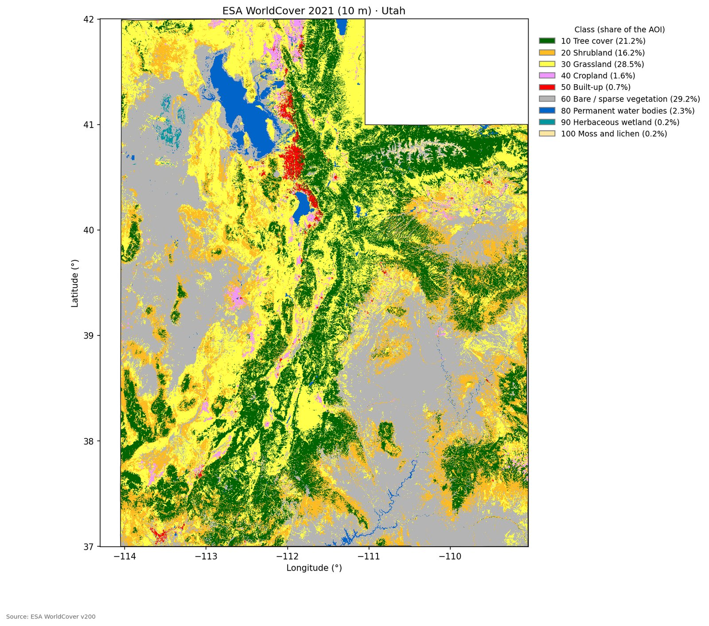
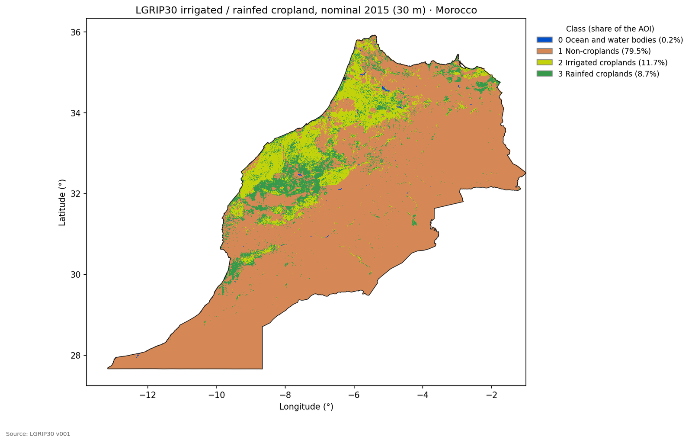
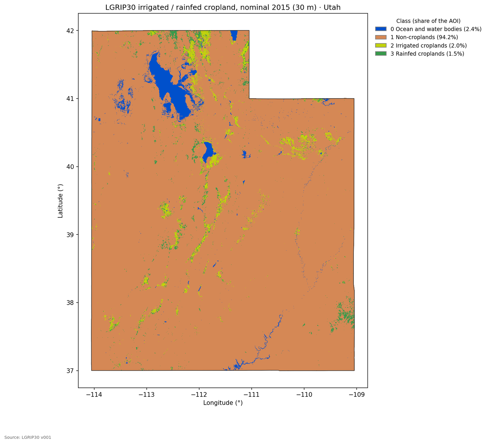

Cropland extent and mask¶
The annual irrigated / rainfed maps are continuous (wall-to-wall): every 10 m pixel of a region's cropland gets a
class, not only the surveyed parcels. This page describes the area those maps cover, the cropland mask, and the
reference layers drawn for comparison. The code is in cropland_extent/; all outputs are in
outputs/<region>/cropland_extent/.
Mapping phase only
The cropland mask belongs to the mapping phase (Phase 5). The labels, the pixel
samples and the experiments E01–E05 do not use it: they classify the labelled pixels of the surveyed parcels,
which are all cropland, as irrigated or rainfed (pixel samples). Only the wall-to-wall
mapping tiles (s2_download/, pixelwise_run/06_build_cropland_tiles.py) read the mask. Which mask the maps
use, and how land that is not cropland is handled, is decided later, for example by comparing the union of
products described here with Dynamic World alone (D19).
| Script | What it does | Output (in outputs/<region>/cropland_extent/) |
|---|---|---|
make_cropland_mask.py |
cropland mask per region and agricultural year from 4 cropland products (Earth Engine) | cropland_mask/<season>/ |
download_esa_worldcover.py |
ESA WorldCover 2021, 10 m GeoTIFF + PNG map | esa_worldcover/ |
download_lgrip30.py |
LGRIP30 irrigated / rainfed cropland, 30 m GeoTIFF + PNG map | lgrip30/ |
download_dynamic_world.py |
annual Dynamic World 10 m layer per agricultural year (Earth Engine): most frequent class, mean crop probability, number of images; GeoTIFF on the project grid + PNG map | dynamic_world/ |
All four use the same area: the region's mapping area in pixelwise_run/regions.py, i.e. Morocco without
Western Sahara (FAO GAUL 2015, 414,905 km²) and the state of Utah (FAO GAUL 2024, 219,809 km²).
1. Why a mask from several products¶
A single cropland product misses cropland: small fields, fallow land, orchards, recent expansion. On the parcels of the first test (3,498 surveyed irrigated parcels in Morocco), single products covered 78% (WorldCover) to 99% (GCEP30) of them; their union covered 100%. A pixel is therefore cropland if at least one of the products calls it cropland. Combining products to reduce omission is established practice: Meier et al. (2018) restricted irrigation mapping to cropland of two land-cover products combined, LANID (Xie et al. 2021) took the cultivated area of any year, and LGRIP30 added cropland that its own extent map missed (Teluguntla et al. 2023).
The price of the union is extra non-cropland inside the mask. How the maps handle it is open and is decided in the mapping phase: a stricter mask (more votes, or a single product such as Dynamic World), or an extra "not cropland" class learnt by the classifier, as IrrMapper did instead of an external mask (Ketchum et al. 2020). The mask is applied to the map output; the model never sees masked inputs.
The mask uses no field labels (neither the Moroccan survey nor WRLU), so its quality is the same in labelled and unlabelled areas. The training data do not depend on the mask: no labelled parcel is checked against it or dropped.
2. Products¶
The year of a product is the calendar year in which the agricultural year ends, clipped to the years the product has (2023/24 → 2024).
| Product | Earth Engine asset | Resolution · year(s) | Cropland = | Source |
|---|---|---|---|---|
| ESA WorldCover v200 | ESA/WorldCover/v200 |
10 m · 2021 | class 40 | Zanaga et al. 2022, doi:10.5281/zenodo.7254221 · GEE catalogue |
| Esri / Impact Observatory LULC | projects/sat-io/open-datasets/landcover/ESRI_Global-LULC_10m_TS |
10 m · annual 2017–2025 | class 5 (crops) | Karra et al. 2021 (IGARSS) · community catalogue |
| GCEP30 (GFSAD) | projects/sat-io/open-datasets/GFSAD/GCEP30 |
30 m · 2015 | value 2 | Thenkabail et al. 2021, USGS PP 1868 · community catalogue |
| GLAD global cropland | users/potapovpeter/Global_cropland_2019 |
30 m · 2003, 2007, 2011, 2015, 2019 | value 1 | Potapov et al. 2022, doi:10.1038/s43016-021-00429-z · GLAD |
- GCEP30 is stored as continental tiles that overlap and disagree in Morocco (the Europe / Middle East tile has almost no cropland there). The flags are combined with the maximum over the tiles, not with a mosaic.
- Tree crops: WorldCover maps orchards as tree cover and GLAD excludes perennial woody crops, so orchards depend on the Esri and GCEP30 layers.
- Not used in the union (kept in the script as options with fixed bit numbers): Dynamic World (too slow per block
and Earth Engine memory errors; an annual Dynamic World layer is downloaded separately by
download_dynamic_world.py, §7), ESA WorldCereal 2021 temporary crops, LGRIP30 (same extent as GCEP30 in the test), GLC_FCS30D, and the USDA Cropland Data Layer for Utah. - Always removed: WorldCover 2021 built-up (50), snow and ice (70) and permanent water (80); these pixels are never mapped.
3. How the mask is made¶
- Blocks on the tile grid. Earth Engine returns at most 48 MB per request, and Morocco at 10 m has about
10 billion pixels. The mapping area is cut into blocks of 1024 × 1024 px (10.24 km) on the same grid as the
tiles of
03_build_tiles.py(x = ix × 1280 m), so every block holds whole 128 px tiles. Morocco has 4,199 blocks, Utah 2,213; 8 blocks are downloaded in parallel at about 0.5 s per block; finished blocks are skipped on a re-run. - One request per block returns one bit per product and the exclusion flag; votes and the mask are computed locally.
- One raster per agricultural year.
cropland_mask.vrtjoins all blocks into one seamless layer. - Tile table.
tiles_cropland.parquetlists every 128 px tile with its number of cropland pixels: the input of the wall-to-wall tiles (s2_download/; earlier routepixelwise_run/06_build_cropland_tiles.py).
Bands of the mask (uint16, NODATA 65535 outside the mapping area):
| Band | Content |
|---|---|
cropland |
the mask: 1 if ≥ MIN_VOTES products (1 = union) call the pixel cropland and it is not excluded |
votes |
number of products that call the pixel cropland (0–4) |
products |
bit flags, one bit per product (WorldCover 0, Esri 1, GCEP30 4, GLAD 6) |
excluded |
1 = WorldCover built-up, snow / ice or water |
The vote count and the flags allow a stricter mask (for example ≥ 2 votes) or another product set later without a new download.
4. Results, 2023/24¶
| Morocco | Utah | |
|---|---|---|
| Mapping area | 414,906 km² | 219,809 km² |
| Cropland (union, ≥ 1 vote) | 103,068 km² (24.8%) | 9,979 km² (4.5%) |
| Cropland with ≥ 2 votes | 73,886 km² | 6,000 km² |
| Removed as built-up / snow / water | 3,087 km² | 6,382 km² |
| 128 px tiles with cropland | 132,616 | 24,861 |
Cropland of each product, and the area that only this product calls cropland (what it adds to the union):
| Product | Morocco: cropland | Morocco: only this product | Utah: cropland | Utah: only this product |
|---|---|---|---|---|
| WorldCover 2021 | 64,122 km² (62% of the union) | 6,474 km² | 3,427 km² (34%) | 110 km² |
| Esri LULC 2024 | 50,876 km² (49%) | 2,950 km² | 5,977 km² (60%) | 1,251 km² |
| GCEP30 2015 | 83,937 km² (81%) | 16,233 km² | 7,742 km² (78%) | 2,121 km² |
| GLAD 2019 | 62,998 km² (61%) | 3,526 km² | 5,650 km² (57%) | 498 km² |
GCEP30 is the most generous product and adds most of the area seen by one product only, mostly at the margins of the cropland belts (right-hand panels below). Most of the union's false cropland is expected there; the choice of mask in the mapping phase and the map accuracy assessment address it.


Left: share of cropland per 1.28 km tile. Right: share of the mask's pixels that only one product calls cropland.
5. Extent of the wall-to-wall tiles¶
Mapping the whole cropland means imagery for every tile that contains cropland: 132,616 tiles in Morocco (about 370 GB of monthly Sentinel-2 composites per year) and 24,861 in Utah (about 69 GB), against 2,183 and 2,720 tiles around the labelled parcels. Morocco's cropland forms one continuous belt from Tangier to Agadir (a quarter of the country), and scattered fields pull in whole 1.64 km² tiles.
STAC download. The wall-to-wall tiles are downloaded with s2_download/ from the public Earth Search STAC
catalogue (collection sentinel-2-c1-l2a, cloud mask from the scene classification layer SCL, monthly median
composites; details in s2_download/README.md). It keeps the tiles with at least 1% cropland: 112,536 tiles in
Morocco and 18,472 in Utah for 2023/24 (Morocco 2024/25: 113,319). The tiles follow the grid and tile_id of the
mask and serve training, experiments and maps of the STAC-based approach.
| Region | Year | Tiles (≥ 1% cropland) | Status |
|---|---|---|---|
| Utah | 2023/24 | 18,472 | 🔄 17,278 downloaded; the rest to be rerun after a bug fix |
| Morocco | 2023/24 | 112,536 | on hold |
The earlier Earth Engine route for the same tiles (pixelwise_run/06_build_cropland_tiles.py) is still in the
repository. The experiments E01–E05 use the Earth Engine tiles around the labelled parcels (03_build_tiles.py).

6. Check against the labelled parcels¶
The label scripts (pixelwise_run/01_prepare_labels_*.py) no longer read the mask, and the pixel samples contain
the surveyed parcels only, whether or not they lie inside the mask. The check of a candidate mask against the
surveyed parcels is part of the mask choice in the mapping phase: the omission of surveyed irrigated and of
surveyed rainfed parcels (cropland the mask misses) and the commission (land in the mask that is not cropland),
for the union of products, for Dynamic World alone and for stricter variants (Phase 5).
7. Reference layers¶
ESA WorldCover and LGRIP30 are drawn as reference maps for the documentation and for comparing the final maps;
the mask reads its products directly in Earth Engine. download_dynamic_world.py builds an annual Dynamic World
layer per agricultural year (Brown et al. 2022): the most frequent class of the year (label), the mean
probability of the class "crops" in percent (crops) and the number of Dynamic World images (n_obs), on the 10 m
grid of the tiles and the mask. It is a candidate for the mask of the maps (by class, or by a threshold on the crop
probability); no model or dataset script uses it. Colours: WorldCover's official palette; LGRIP30 water
#0050cb, non-cropland #d58855, irrigated #c2d30c, rainfed #379a4b. The PNG maps are reduced to 2,500 px
for display (mode resampling) from the original 10 m and 30 m GeoTIFFs.
| Morocco | Utah | |
|---|---|---|
| ESA WorldCover 2021 |  |
 |
| LGRIP30 (nominal 2015) |  |
 |


LGRIP30 calls 11.7% of Morocco irrigated and 8.7% rainfed, including large parts of the rainfed Gharb and Chaouia plains; it is a reference layer, not ground truth.
References¶
- Brown, C. F. et al. (2022). Dynamic World, near real-time global 10 m land use land cover mapping. Scientific Data 9, 251. doi:10.1038/s41597-022-01307-4
- Karra, K. et al. (2021). Global land use / land cover with Sentinel-2 and deep learning. IGARSS 2021.
- Ketchum, D. et al. (2020). IrrMapper. Remote Sensing 12, 2328. doi:10.3390/rs12142328
- Meier, J., Zabel, F. & Mauser, W. (2018). A global approach to estimate irrigated areas. HESS 22, 1119–1133. doi:10.5194/hess-22-1119-2018
- Potapov, P. et al. (2022). Global maps of cropland extent and change show accelerated cropland expansion in the twenty-first century. Nature Food 3, 19–28. doi:10.1038/s43016-021-00429-z
- Teluguntla, P. et al. (2023). LGRIP30 v001. NASA LP DAAC. doi:10.5067/Community/LGRIP/LGRIP30.001
- Thenkabail, P. S. et al. (2021). Global Cropland-Extent Product at 30-m Resolution (GCEP30). USGS Professional Paper 1868. doi:10.3133/pp1868
- Xie, Y., Gibbs, H. K. & Lark, T. J. (2021). Landsat-based Irrigation Dataset (LANID). ESSD 13, 5689–5710. doi:10.5194/essd-13-5689-2021
- Zanaga, D. et al. (2022). ESA WorldCover 10 m 2021 v200. doi:10.5281/zenodo.7254221